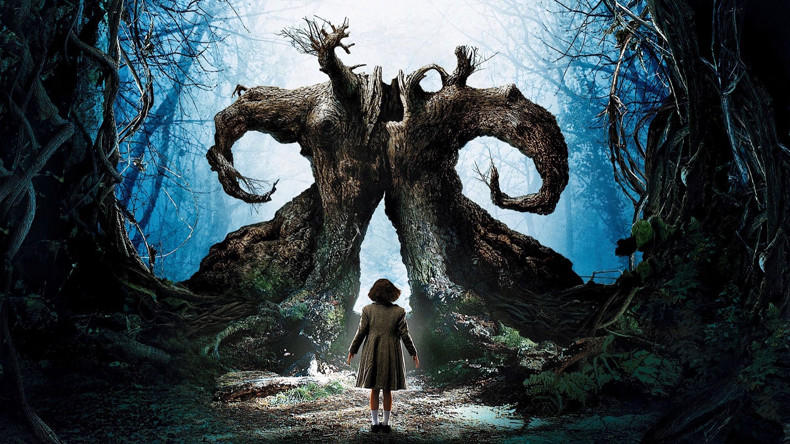
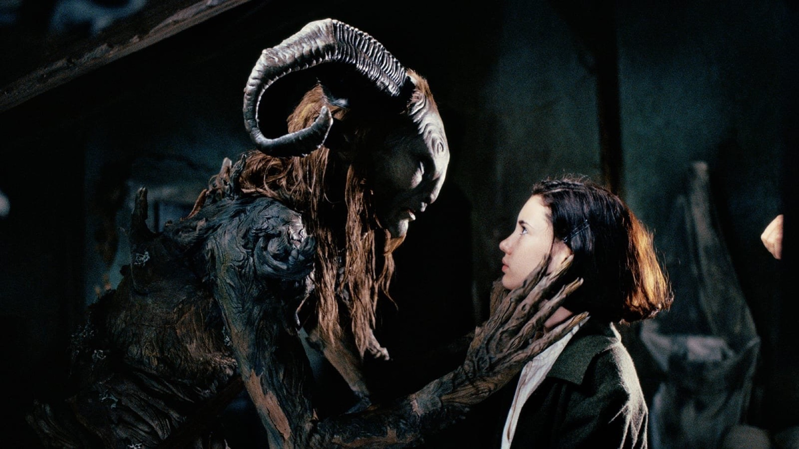
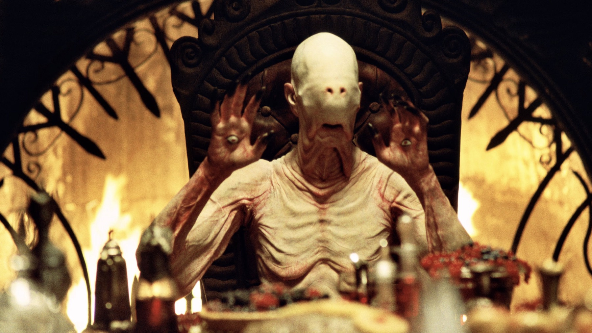

El laberinto del fauno compie 20 anni: 8 curiosità
Un quaderno dimenticato in taxi, un attore che imparò lo spagnolo sotto il trucco e uno Stephen King che si contorceva sulla poltrona
L'11 ottobre 2006 usciva nelle sale spagnole una favola che di favola aveva solo l'apparenza. Nella Spagna franchista del 1944, una bambina di nome Ofelia scopre un labirinto in fondo al bosco e un fauno che le promette un regno. Vent'anni dopo, El laberinto del fauno di Guillermo del Toro è considerato uno dei grandi film del nostro secolo, e il regista messicano lo sta festeggiando come merita: con un restauro, un ritorno a Cannes e una nuova uscita in sala. Noi lo celebriamo così, con otto curiosità che forse non conoscete.
L'ovazione più lunga di Cannes
Il 27 maggio 2006, alla prima mondiale al Festival di Cannes, il pubblico tributò al film una standing ovation di 22 minuti, ricordata come una delle più lunghe nella storia della Croisette. Vent'anni dopo, nel maggio 2026, del Toro è tornato proprio a Cannes per presentare la versione restaurata.
Il quaderno perso in taxi
Del Toro riempie da sempre quaderni di schizzi, idee e appunti, e in uno di quelli c'era buona parte del Labirinto. Un giorno lo dimenticò sul sedile posteriore di un taxi a Londra. Il tassista lo ritrovò e, risalendo all'hotel dove il regista alloggiava, glielo restituì. Senza quel gesto, molte delle creature del film forse non sarebbero mai esistite.

Doug Jones e lo spagnolo imparato sotto il trucco
Doug Jones, il fauno e anche l'Uomo Pallido, non parlava spagnolo. Ha imparato le battute durante le lunghe sedute di trucco, circa cinque ore ogni volta, perché i movimenti della bocca coincidessero con i dialoghi. Ironia della sorte: al montaggio del Toro decise comunque di doppiarlo con l'attore teatrale spagnolo Pablo Adán. La voce non è la sua, ma ogni gesto inquietante del fauno sì.
Ofelia doveva essere più piccola
Nella sceneggiatura originale la protagonista aveva otto o nove anni. Poi ai provini si presentò Ivana Baquero, che di anni ne aveva undici, e del Toro decise di riscrivere il personaggio su di lei.
Il fauno, non Pan
Il titolo internazionale è Pan's Labyrinth, ma nel film il dio Pan non c'è. Il titolo originale parla di un fauno, creatura della mitologia romana, ed è quello giusto: la scelta di Pan fu fatta pensando al pubblico anglofono. Un motivo in più per chiamarlo con il suo nome, El laberinto del fauno.

Il suo Oscar si chiama Stephen King
Del Toro volò fino nel Maine, con le bobine sotto il braccio, per mostrare il film allo scrittore che venerava fin da bambino. Durante la scena dell'Uomo Pallido, la creatura con gli occhi sui palmi delle mani, King si contorse sulla poltrona per tutto il tempo. Del Toro lo ha definito il momento più bello della sua vita, il suo vero Oscar.
I sottotitoli li ha scritti lui
Scottato dalle traduzioni inglesi del suo precedente film in spagnolo, El espinazo del diablo, che giudicava pessime, del Toro decise di scrivere personalmente i sottotitoli inglesi del Labirinto. Ci lavorò per circa un mese, dopo aver finito il film.
Tre Oscar e un restauro senza IA
Agli Oscar del 2007 il film ottenne sei candidature e vinse tre statuette: fotografia, scenografia e trucco. Per i vent'anni, del Toro ha supervisionato un restauro in 4K e una conversione in 3D realizzata a mano, fotogramma per fotogramma, con una regola precisa: niente intelligenza artificiale. Questa versione torna nelle sale a ottobre negli Stati Uniti e in Messico.
La festa è cominciata già in estate. A luglio del Toro ha riempito la Hall H del Comic-Con di San Diego per celebrare i vent'anni del film insieme a Doug Jones, a Ivana Baquero e al direttore della fotografia Guillermo Navarro, premiato con l'Oscar proprio per questo film. E la riedizione sarà accompagnata da un documentario sulla lavorazione, in cui raccontano l'influenza del film anche Cate Blanchett, Jacob Elordi e Charlie Day. Speriamo solo che qualcuno lo porti presto anche nelle sale italiane.
Vent'anni dopo, El laberinto del fauno non ha perso un grammo della sua forza: una favola nera sulla disobbedienza e sull'innocenza, girata da un regista che crede ancora nel lavoro fatto a mano. Da riguardare, magari spegnendo la luce. E voi, quale curiosità non conoscevate?